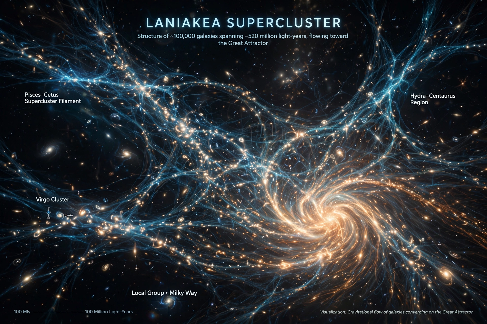

| Constellations | Triangulum Australe and Norma (centre) |
|---|---|
| Contains | Virgo Cluster, Great Attractor, Milky Way |
| Diameter | ~520 million light-years |
| Number of galaxies | ~100,000 |
| Defined | 2014 (Tully et al.) |
The Laniakea Supercluster is the galaxy supercluster that is home to the Milky Way and approximately 100,000 other nearby galaxies. It was defined in September 2014 by a team led by R. Brent Tully, who mapped the motions of galaxies to identify the region whose contents flow gravitationally towards a common attractor. "Laniakea" means "immense heaven" in Hawaiian.
Superclusters were traditionally defined by density maps, but the Laniakea team instead used peculiar velocities: galaxies flow like rivers within a basin of attraction bounded by watersheds. Laniakea's flows converge on the region of the Great Attractor, near the Norma Cluster. The neighbouring Perseus–Pisces Supercluster lies beyond a divide along which flows part.
Laniakea subsumes the previously recognised Virgo Supercluster (now one of its lobes), the Hydra–Centaurus Supercluster, the Pavo–Indus Supercluster, and the Southern Supercluster. Its total mass is about 1017 solar masses — roughly 100 times that previously assigned to the Virgo Supercluster.